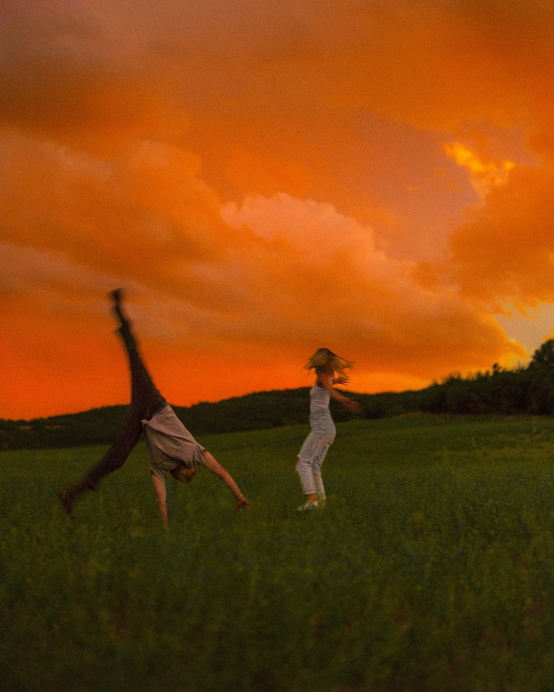
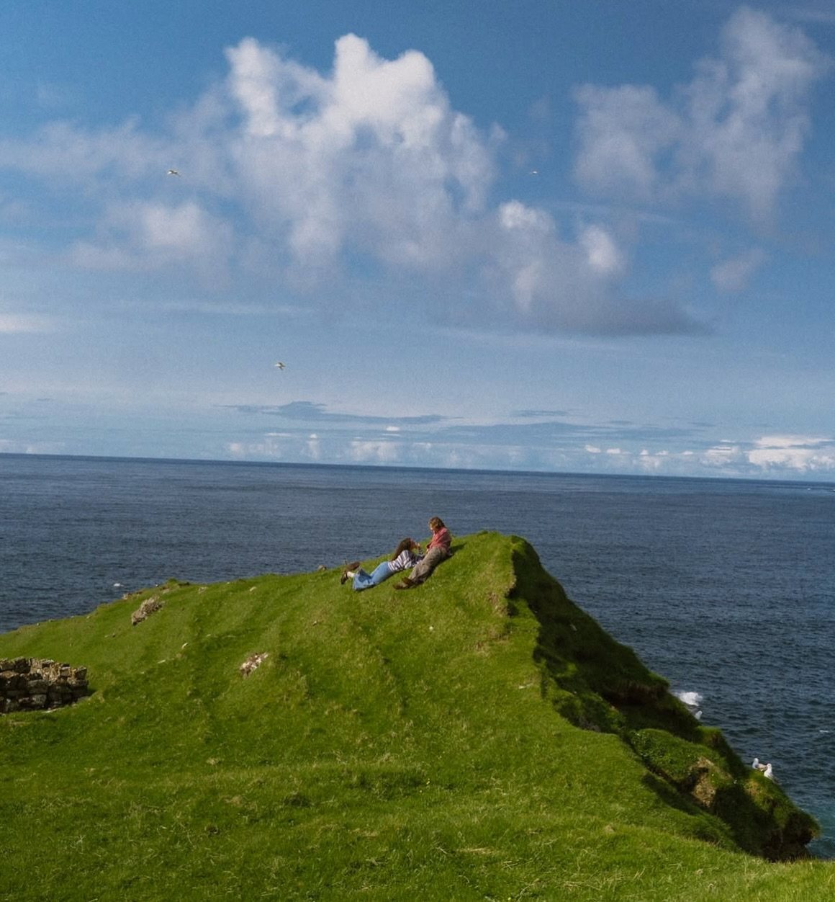
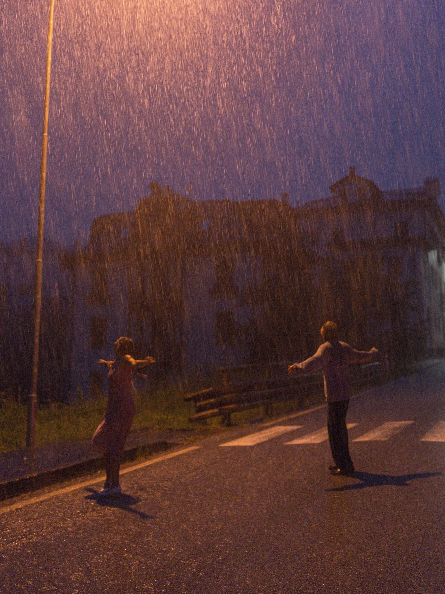

VISUAL MOOD · GOLDEN HOUR01 / GOLDEN HOURChase the
Chase the
last light.
A sky that refuses to stand still. A moment that feels too alive to leave behind.
Imagine your scene ↗CUSTOM AI WEDDING FILMS
A custom AI wedding film starring the two of you, inspired by the places you dream of going and made for the moment your guests are watching.
THE IDEA
An AI wedding film is a short, personalized video created before your wedding from approved photos, your story and a shared creative direction. It plays at your reception as an entrance film, a love story moment or a movie-style trailer. You can choose a world you dream of visiting without filming on location.
DESTINATIONS ARE ONLY THE BEGINNING
These travel photographs show a feeling, not a finished film. Your AI film is created from your story, agreed creative direction and approved likenesses.

VISUAL MOOD · GOLDEN HOURA sky that refuses to stand still. A moment that feels too alive to leave behind.
Imagine your scene ↗
VISUAL MOOD · OPEN SEAThe view is extraordinary. The feeling of being there together is the part worth keeping.
Imagine your scene ↗
VISUAL MOOD · AFTER DARKA city after rain. The smallest shared moment can become the scene everyone remembers.
Imagine your scene ↗MADE FOR THE ROOM
Build to your entrance, cue the first words from your host or surprise everyone at dinner. We plan the ending around the exact moment it will play.
CHOOSE YOUR MOMENT
We confirm scope, duration and revision rounds with you before production.
A focused, cinematic opening that builds anticipation before you walk in.
The moments that brought you here, shaped for the friends and family in the room.
Your shared obsessions, inside jokes or dream destination become the plot.
HOW WE MAKE IT
Share the date, the reception moment, photos and the details you want the film to remember.
We agree on the concept, people featured and visual direction before production starts.
Watch an initial cut and refine it within the revision rounds agreed for your project.
Receive a widescreen file and backup export prepared for your venue team.
BUILT ON TRUST
We confirm permission from every real person featured before using their likeness.
You see the film before delivery. We never treat a concept image as a client sample.
Your film is not published in a portfolio without separate permission.
GOOD TO KNOW
It is a personalized film made before the wedding from your approved photos, story and creative direction. It is designed for a reception screen and can imagine scenes in places you have not visited.
No. We can plan a travel-inspired story using approved photos and an agreed visual concept. We discuss what is realistic for your materials before production.
No. It is a creative AI-assisted film produced before the wedding to play at your celebration. Wedding-day documentary coverage is a separate service.
We agree on the materials and people featured before production. Voice use is discussed separately, and the people depicted must give permission.
Yes. The proposal will specify the preview point, revision rounds and delivery date.
We prepare a widescreen export and backup. Your venue or AV team should confirm their screen and playback specifications before final delivery.
YOUR STORY STARTS HERE
Tell us your date, the moment it will play and the first place that comes to mind.
LOCAL DESIGN PROTOTYPE · THIS FORM DOES NOT SEND OR STORE DETAILS